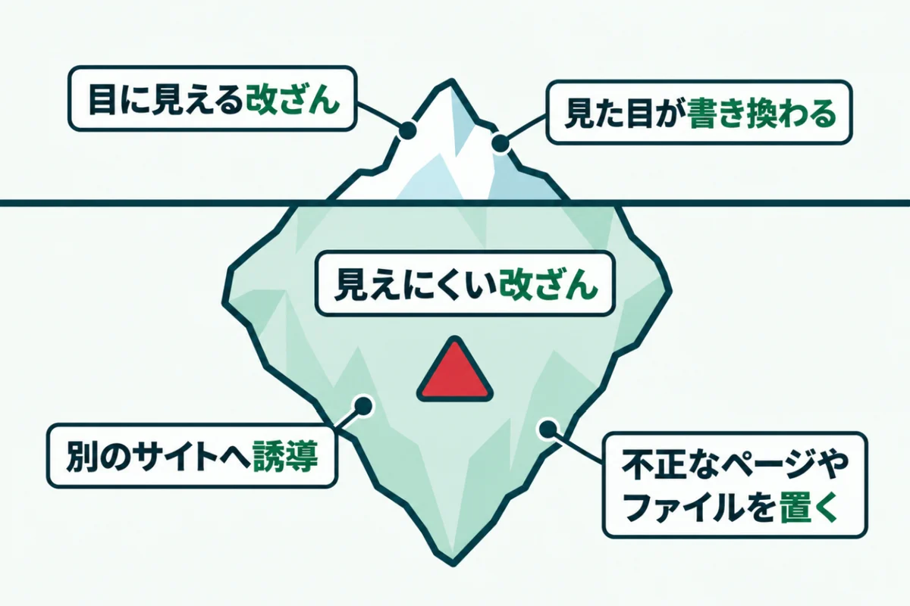
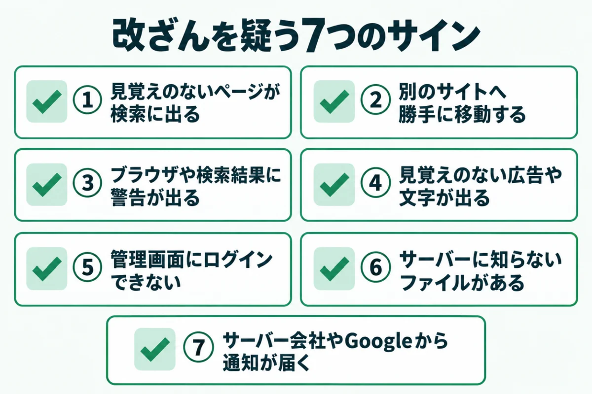
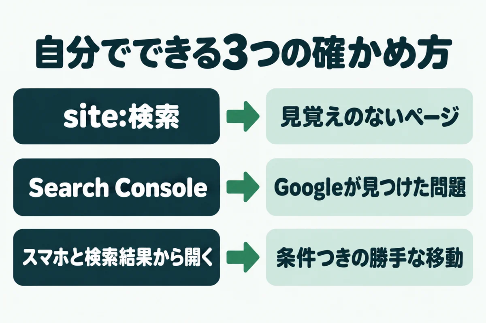
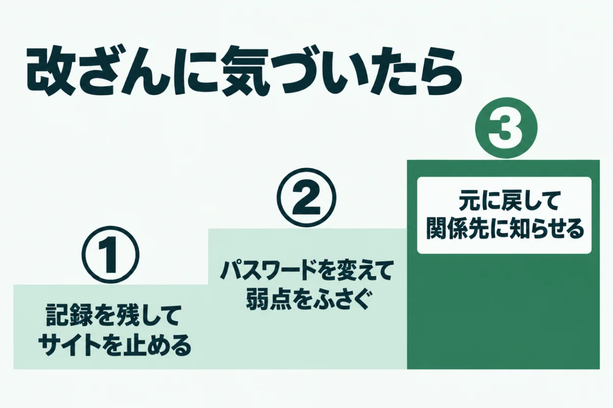
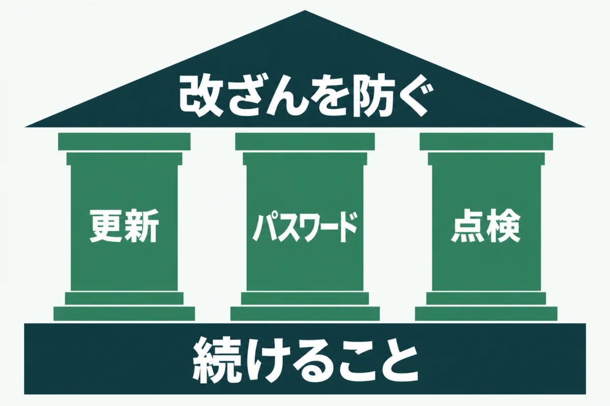

ホームページが改ざんされたかも？確認したい7つのサインと自分でできる確かめ方

「ホームページが改ざんされているかもしれない」と不安になっていませんか？
お客さまから「変なページが出る」と言われても、自分で開くと普通に見えることがあります。
この記事では、ホームページの改ざんを疑うべき7つのサインを紹介します。自分で確かめる方法と、気づいたときの初動もまとめました。
専門の担当者がいない会社でも、今日から点検できる内容に絞っています。
ホームページの改ざんとは

ホームページの改ざんとは、持ち主の許可なく、ページの中身や設定を書き換えられることです。警察庁は、不要なファイルを置かれることも改ざんに含めています。
改ざんされたサイトは、偽の情報を広めたり、訪れた人をウイルスに感染させたりする入口になります。自社だけでなく、お客さまにも被害が及ぶ点が、ほかのトラブルとの大きな違いです。
改ざんで起きること
改ざんで起きることは、大きく3つに分けられます。1つ目は、トップページの見た目が書き換えられることです。2つ目は別のサイトへの勝手な移動、3つ目は裏で不正なページやファイルを置かれることになります。
見た目が書き換わる改ざんは、すぐに気づけます。やっかいなのは残りの2つでしょう。ふだんの表示はそのままで、裏側だけが使われるため、何か月も放置されることがあります。
見た目が変わらない改ざんが増えている理由
攻撃する側の目的は、目立つことより、サイトを長く使うことに移っています。偽の通販サイトへの誘導や、検索結果を使った宣伝に使うためです。
そのため、持ち主には気づかれにくい形で書き換えます。検索結果やスマートフォンから開いたときだけ、別のサイトへ移動させる手口もあります。管理者がパソコンで開いても、異常が見えません。
ホームページの改ざんを疑うべき7つのサイン

ホームページの改ざんは、いくつかのサインで気づけます。1つでも当てはまったら、まず疑って確かめることが大切です。
サインの多くは、管理者よりも先に、お客さまや外部の会社が気づきます。「気のせいかもしれない」と流さずに、次の7つと照らし合わせてください。上から順に、見つけやすいものを並べました。社内で手分けして確かめるのもよいでしょう。
① 見覚えのないページが検索結果に出る
自社の名前で検索したとき、作った覚えのないページが出てくることがあります。外国語のページや、通販、薬の宣伝などが典型です。
これは、裏で不正なページを大量に置かれたときに起きます。トップページは無事でも、検索結果だけが汚されることがあるのです。次の章で紹介する「site:」検索を使うと、見つけやすくなります。
② 別のサイトへ勝手に移動する
ページを開いた瞬間に、見覚えのないサイトへ移動するのも典型的なサインです。懸賞の当選画面や、偽のウイルス警告に飛ばされる例がよく見られます。
この手口は、条件を満たしたときだけ移動させることが多く、毎回は起きません。お客さまから連絡があったら、どの端末でどこから開いたかを聞いておきましょう。確かめるときの手がかりになります。
③ ブラウザや検索結果に警告が出る
ブラウザに「危険なサイト」という赤い画面が出ることがあります。検索結果に「ハッキングされている可能性」と表示される例もあるでしょう。
こうした警告は、Googleなどが不正なプログラムや誘導を見つけたときに出ます。警告が出ると、訪問者の多くはサイトに入らず引き返してしまうのです。売上や問い合わせにも直接響くため、すぐに確かめてください。
④ 見覚えのない広告や文字が表示される
ページの一部に、入れた覚えのない広告や文字、画像が出ていることもあります。ページの一番下や、目立たない場所に置かれるのが一般的です。
スマートフォンで開いたときだけ表示される例もあります。パソコンとスマートフォンの両方で確かめると、見落としを減らせます。白い文字で、背景に溶け込むように隠されていることもあるでしょう。
⑤ 管理画面にログインできない・知らないユーザーがいる
いつものパスワードで管理画面に入れなくなったら、乗っ取りを疑います。入れたとしても、知らない管理者のアカウントが増えていないかを見てください。
攻撃する側は、再び入るための裏口として、アカウントを追加することがあります。作った覚えのない管理者がいたら、改ざんの可能性が高いと考えましょう。警察庁の事例にも、ログインできなくなった例が載っています。
⑥ サーバーに見覚えのないファイルがある
サーバーの管理画面やFTPでファイルを見ると、作った覚えのないファイルが置かれていることがあります。名前が意味のない英数字の並びになっているのが特徴です。
更新した覚えのない日付のファイルも、注意が必要です。最近書き換えられたファイルを日付順に並べると、怪しいものを見つけやすくなります。ただし、消す前に必ず控えを取ってください。
⑦ サーバー会社やGoogleから通知が届く
サーバー会社から「不正なプログラムを見つけた」と連絡が来ることがあります。Googleの「Search Console」に登録していれば、問題があるときにメールが届きます。
こうした通知は、迷惑メールと間違えて見落とされがちです。通知の差出人と内容は、公式サイトで確かめるようにしてください。通知を装った偽のメールもあるため、本文のリンクは開かないのが安全です。
ホームページの改ざんを自分で確認する方法

ホームページの改ざんは、専門の道具がなくても、ある程度は自分で確認できます。どれも無料で、1つあたり10分ほどで終わる方法です。
ここで紹介する3つは、見つけられるサインがそれぞれ違います。1つだけで安心せず、3つを組み合わせてください。月に1回など、日を決めて続けると、早く気づけるようになります。結果は簡単に記録しておきましょう。
「site:」検索で見覚えのないページを探す
Googleの検索窓に「site:」と自社のドメインを続けて入れてみてください。たとえば「site:example.co.jp」です。そのドメインで検索に載っているページが、一覧で表示されます。
一覧に、作った覚えのないページや外国語のページがないかを見てください。ページ数が急に増えているときも注意が必要です。警察庁も、この方法を改ざんの確認に挙げています。
Search Consoleの「セキュリティの問題」を見る
Googleの「Search Console」には、「セキュリティの問題」という報告があります。ハッキングされたコンテンツや、不正なプログラムが見つかると、ここに表示されます。
問題がなければ、緑のチェックマークが表示されるはずです。まだ登録していない場合は、今のうちに登録しておくと安心です。登録しておけば、問題が見つかったときにメールでも知らせてくれます。
スマートフォンと検索結果から開いて確かめる
改ざんの中には、条件を満たしたときだけ別のサイトへ移動させるものがあります。いつものパソコンでブックマークから開くだけでは、見つかりません。
そこで、スマートフォンで、検索結果から自社のサイトを開いてみてください。会社のパソコン以外の回線で試すと、なお確実です。お客さまから連絡があったときの条件に合わせて試すのがコツになります。
ホームページの改ざんに気づいたときの初動

ホームページの改ざんに気づいたら、あわてて怪しいファイルを消したくなります。しかし、先に記録を残さないと、原因が分からなくなります。
原因が分からないまま元に戻すと、同じ弱点から何度も入られかねません。初動は、次の3つの順で進めてください。自分だけで判断がつかない場合は、早めに制作会社や専門家に相談しましょう。
① 記録を残してサイトを止める
まず、おかしな画面を撮影し、気づいた日時とURLを控えます。サーバー会社の管理画面から、アクセスの記録も保存しておきましょう。
そのうえで、被害を広げないためにサイトを一時的に止めます。サーバー会社によっては、管理画面から公開を止められます。止め方が分からない場合は、サーバー会社に問い合わせてください。
② パスワードを変えて弱点をふさぐ
次に、管理画面、サーバー、FTPのパスワードをすべて変えます。改ざんに使われた可能性のあるものは、残さず変えるのが基本です。
あわせて、WordPress本体やプラグイン、PHPを最新にします。入られた原因の多くは、古いまま放置されたプログラムの弱点です。総務省も、基本的な対策の不足が原因になると説明しています。
③ 元に戻して関係先に知らせる
改ざんされる前のバックアップがあれば、それを使って元に戻します。戻したあとで、不正なファイルが残っていないかを確かめてください。
お客さまの情報が漏れたおそれがある場合は、警察や関係先への連絡も必要です。警察に相談するときは、保存した記録を持っていくと話が早く進みます。検索結果の警告は、直したあとにSearch Consoleから審査を申し込めば外れます。
ホームページの改ざんを防ぐために続けたいこと

ホームページの改ざんを防ぐ方法は、特別なものではありません。更新、パスワード、点検の3つを続けることが、いちばん効果的です。
まず、WordPress本体やプラグイン、PHPを最新に保ちます。次に、管理画面のパスワードを長く複雑にして、使っていないユーザーを消します。そして、外から見た状態を定期的に点検しましょう。
GMOプライム・ストラテジーは2026年6月、上場企業のサイトの調査結果を発表しました。WordPressサイトの11.2%で、ログイン攻撃の条件が3つそろっていたそうです。ログイン名が外から読める状態も、その条件の1つです。サイトドックの無料簡易診断でも、この点を確かめられます。
URLを入れるだけで、古いプログラムやログイン名の見え方など7項目を無料で判定します。登録はいりません。
無料で診断するホームページの改ざん確認に関するよくある質問
自分で開くと普通に見えるのに、お客さまは「変なページが出る」と言います。改ざんですか？
改ざんの可能性があります。検索結果やスマートフォンから開いたときだけ、別のサイトへ移動させる手口があるためです。お客さまがどの端末で、どこから開いたかを聞き、同じ条件で試してください。それでも分からない場合は、専門家に調べてもらうのが確実でしょう。自分で開いて何も起きないからといって、安心はできません。
改ざんされたら、サイトはすぐに止めたほうがいいですか？
訪れた人に被害が出るおそれがあるなら、止めることをおすすめします。不正なプログラムが置かれている場合、開いただけでウイルスに感染することもあるからです。止める前に、画面の写しとアクセスの記録を残しておいてください。止め方はサーバー会社に確かめると安全です。止めている間は、トップページにお知らせを出しておくと、お客さまも戸惑いません。
改ざんは警察に届け出たほうがいいですか？
お客さまの情報が漏れたおそれがある場合や、被害が大きい場合は相談しましょう。警察庁は、最寄りの警察署やサイバー犯罪の相談窓口への相談を案内しています。保存したアクセスの記録や画面の写しを持っていくと、話がスムーズに進みます。事前に電話しておくと、なお安心です。届け出るかどうか迷うときも、まずは相談だけしてみてください。
バックアップから戻せば、改ざんは解決しますか？
戻すだけでは解決しません。入られた原因の弱点が残っていると、同じ方法でまた改ざんされるからです。戻す前後に、パスワードの変更と、本体やプラグインの更新を必ず行ってください。どの時点のバックアップが無事かも、日付を見て慎重に選ぶ必要があります。改ざんの前から不正なファイルが置かれていた例もあるためです。
無料の診断で、改ざんされているかどうか分かりますか？
サイトドックの無料簡易診断は、改ざんそのものを見つけるものではありません。外から見て、改ざんの原因になりやすい古いプログラムや設定がないかを判定するものです。改ざんが疑われるときは、この記事の確認方法と組み合わせてください。サーバーの中まで調べる場合は詳細診断で対応します。まずは無料簡易診断で、外から見た弱点を確かめてください。
まとめ
ホームページの改ざんは、見た目が変わらないまま裏側だけ使われることが多く、気づくのが遅れがちです。7つのサインに1つでも当てはまったら、まず疑って確かめてください。
確かめるときは、3つの方法を組み合わせます。「site:」検索、Search Console、スマートフォンからの表示です。気づいたら、記録を残してから止め、パスワードの変更と更新を行いましょう。
そして、更新、パスワード、点検の3つを続けることが、改ざんを防ぐいちばんの近道です。
まずは、今の状態を知るところから。
URLを入れるだけで、数十秒で判定が出ます。登録はいりません。